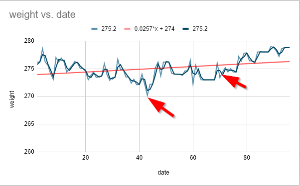

macdonaldster.ca

A personal site, not a blog | Changes? XML Sitemap
#blog | #covid19 | #dog | #health | #mindfulness | #notes | #organizing | #politics | #random | #site | #TIL
Evolving Thoughts on Weight Loss
Lates update: 2020-04-04
2019-10-10 - I just need a place to put down my thoughts as they arise. This is a very complicated and irritating source of negativity in my life.
- I want to lose weight
- I know (KETO or whatever diet) I need to eat less to make that happen
- I resolve to eat less
- I then do not eat less
- I resolve to go on Keto, I then eat carbs
This is a continuous cycle. It is kind of maddening. I am alone a lot. I eat during the day and before bed. My daytime eating is in control 5 out of 7 days. The other two days I just tend to eat “too much” but it really isn’t crazy compared to someone who eats in a restaurant for lunch. I do not like being too full so this helps overeating. The evenings, I am getting much better at “how little can I eat to feel OK but not go overboard”.
I am slowly, slowly improving. But I am improving much slower than my body is getting worse at dealing with what I eat. My metabolism is slow, I don’t have time to exercise (sure, I do, it’s complicated). And so on. So if I go off plan even a little, I’m done for the week.
It seems like I just need to say “no” to myself. But I think if I want to be successful in that I need something to replace food. And there’s not a lot of stuff in my life where I can say “hey, yes, I’ll treat myself to a movie every Friday night if I lost weight that week” or “I will get myself this nifty thing for my non-existent hobby with my non-existent money”. I just have to say “no” to myself.
That’s really it.
2019-10-15 - Well, Thanksgiving weekend has come and gone. I ate way too much. I am suffering from back pain at this point which will go away as the day goes on, for sure. If nothing else, it has motivated me to get back into Keto again, for a while. Unfortunately, we are going on vacation at the end of this week, so maybe I’ll eat Keto until we go away and then get back on after our short time away.
2019-10-17 - I am still experiencing a flare up of inflammation but it is getting better. I got a Contigo 40oz water bottle yesterday and killed it twice over plus many other glasses of water, etc. The last time I had success with Keto, I was constantly drinking water. This water bottle seems to be helping with that, especially since it fits into the cup holder in the car, somehow. Today, after I pick Owen up at school, I am going to try to make some almond crackers. Having those helps me to not eat carbs since I get the crunch of a cracker as part of a nightime snack. That is my chief source of carbs right now: snacks of crackers and cheese or peanut butter.
2019-10-18 - Inflammation mostly gone now except first thing in the morning and a little in my lower back. I am “full keto” now. Tracking using the Carb Manager app. I got a year’s subscription to it. Going all in. It is slow. I am not sure if that is on thier end or something on my end. Good app once it is working, though (specializes in Keto nutrition, etc).
2019-10-24 - Back from vacation, starting Keto in earnest. Stay tuned. The back pain/inflammation I have been dealing with for a while has subsided, mostly. Was really bad on vacation as I was not eating correctly (I think?). Looking forward to getting the full Keto experience - ha ha.
2020-04-04 - How the mighty have fallen.
I was on track, I was doing well. I was losing weight. The trend line was negative. Then we had a global pandemic. I was no longer on track. We started “stress eating”. I didn’t get even the rudimentary exercise of trips to and from my son’s school. I started making and eating homemade bread. I upped my carb portion at meals from a 1/3 cup to “whatever I wanted”.
Well, the chart below shows how that went. I have indicated my low point and approximately where I went off the rails. This is why you need to track.

So, I am getting back on the horse. I am going to try to take back the responsibility and think about what the hell I’ve been doing all this time. I am going to think about growing old in a healthy way. About being a good role model for our son. About being robust in my later years. I don’t really have a choice. I also need to start doing cardio in the house if we aren’t getting out for walks. It’s still basically Winter here so it’s been a challenge. I am looking forward to warmer weather.
Wish me luck!